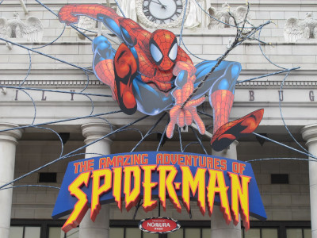

Homem-Aranha (Spider-Man), o alter ego de Peter Parker, é um super-herói das revistas em quadrinhos publicadas pela Marvel Comics. Criado pelo escritor/editor Stan Lee e pelo escritor/artista Steve Ditko, o Homem-Aranha surgiu em Amazing Fantasy #15 (agosto de 1962), durante a Era de Prata dos Quadrinhos. Lee e Ditko conceberam o personagem como um órfão educado por seus tios (May Parker e Ben Parker) em Nova Iorque que, enquanto adolescente, tem de lidar com as lutas diárias naturais dessa idade em adição às lutas extraordinárias como combatente do crime. Os criadores deram-lhe superforça, superagilidade, capacidade de aderir à maioria das superfícies, habilidade de disparar teias sintéticas de aranha através de mecanismos nos pulsos — inventados pelo próprio Peter e batizados de lançadores de teia (web-shooters) — e uma reação precognitiva ao perigo chamada sentido-aranha (spider-sense) após Peter ter sido picado por uma aranha radioativa geneticamente modificada.
spidermage 🕷 🕸:
Como observou um jornalista contemporâneo: "O Homem-Aranha tem um problema de identidade terrível, um complexo de inferioridade marcado e um medo das mulheres. Ele é antissocial, castrado, atormentado pela culpa edipiana e propenso a acidentes... Um neurótico funcional".[81] Agonizando sobre suas escolhas, sempre tentando fazer o que é certo, ele é, no entanto, visto com suspeita pelas autoridades, que parecem não ter certeza se ele é um vigilante útil ou um inteligente criminoso.[82]
a culture of pop 🌈:

David Gilmour: